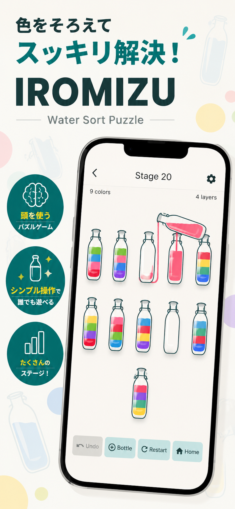
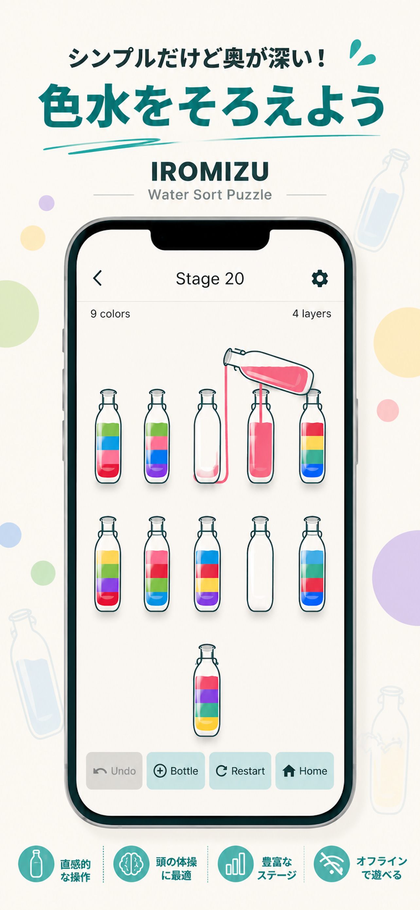
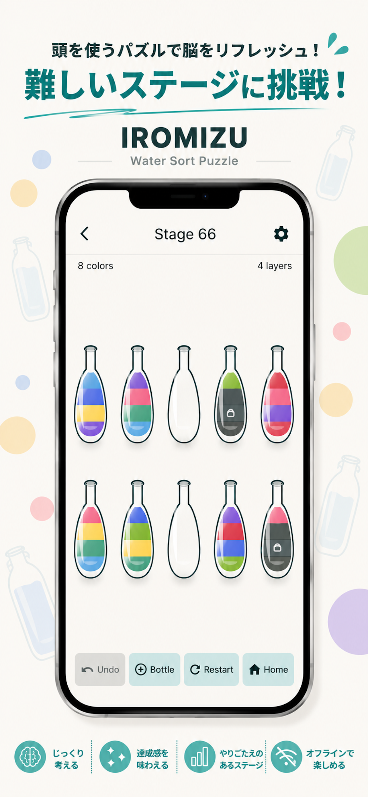
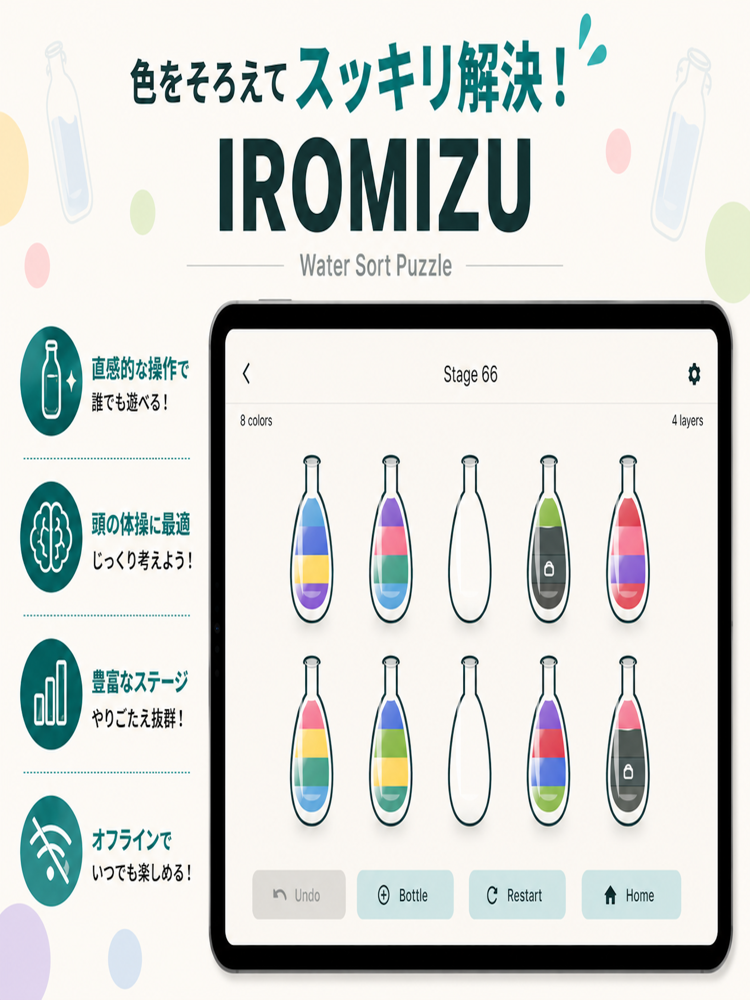

Puzzle / Offline
Iromizu
シンプルだけど奥が深い、色水ソートパズル。
ボトルを選んで色水を移し、同じ色でそろえたらクリア。 直感的な操作で遊べる一方、ステージが進むほど先を読む力が試されます。 通信環境を気にせず、ひとりでじっくり遊べます。
- 色水をそろえるウォーターソートパズル
- 直感的なタップ操作
- やりごたえのあるステージ
- オフラインでプレイ可能




Water Sort Puzzle
色をそろえて、
スッキリ解決。
Iromizu は、ボトルの色水を入れ替えながら同じ色にそろえていくパズルゲームです。 じっくり考えるステージも、短い時間で遊べるステージも、オフラインで気軽に楽しめます。
About
このページでは、Iromizu のアプリ情報、スクリーンショット、サポート、プライバシーポリシーをまとめています。 アカウント登録なしで、端末内で完結して遊べるパズルアプリです。
App
Puzzle / Offline
シンプルだけど奥が深い、色水ソートパズル。
ボトルを選んで色水を移し、同じ色でそろえたらクリア。 直感的な操作で遊べる一方、ステージが進むほど先を読む力が試されます。 通信環境を気にせず、ひとりでじっくり遊べます。




Features
ルールはシンプル。ボトルの色水を移して、同じ色ごとにまとめていきます。
ステージが進むほど、どの色を先に動かすかが大切になります。短時間でも頭の体操にぴったりです。
ゲームプレイは通信環境を気にせず楽しめます。移動中やちょっとした空き時間にも遊びやすい設計です。
ログインやアカウント作成を前提としない、シンプルなローカルアプリです。
Links